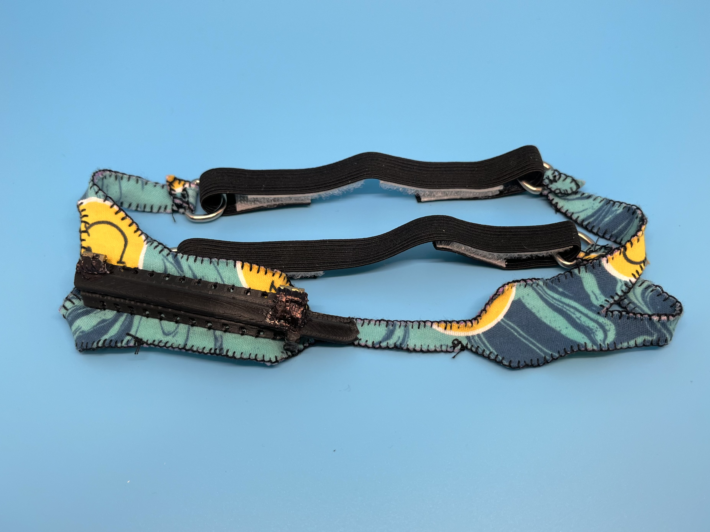

Sticky Note Session: Team Brainstorm Session
Revision 1: Low resolution prototype. We used foamcore, felt, and elastic to create this revision

Revision 2: Clip Closed. This revision encloses the NG tube, while having a hinging mechanism to open, a clasp to secure the hinge, and sew holes to attach to the headgear. It was made with Polylactic Acid filament using a Fused Filament Fabrication method.

Full Revision 2

Rev. 3: Clip CLosed. This iteration replaced the hinge to open/close the clip with four clip arms. The left and right bottom clip arms can be lifted with the left and right top clip arms to be lifted afterwards. I led all of the manufacturing efforts for the clip, so I did most of the fabrication and design review.